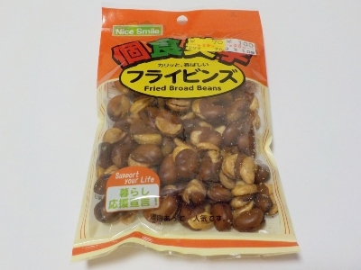

岡山県笠岡市園井2160
更新日 : 2026/08/27

この手の揚げたそら豆の皮ってあまり食べなかったんですが、今回は食べてみることにしました。
皮がない方が美味しい感じがしますが、皮があってもそんなに問題はないかな。皮を外す作業がなくなると思ったら、皮ごと食べる方が楽でいいと思いました。
たまに豆の固いのがあると思ったら、皮の固さなんて大したことないです。
塩が効いてて、美味しいおつまみになりました。
値下げされて販売していました。税込み76円だと買っちゃいますね。
【おいしいものを食べよう。】【たくさん寝よう。】
【ソロ活をしよう!】【季節感のあることをしよう。】【動画視聴はほどほどに。】【当サイトの全てのコンテンツは無断転載禁止です。】